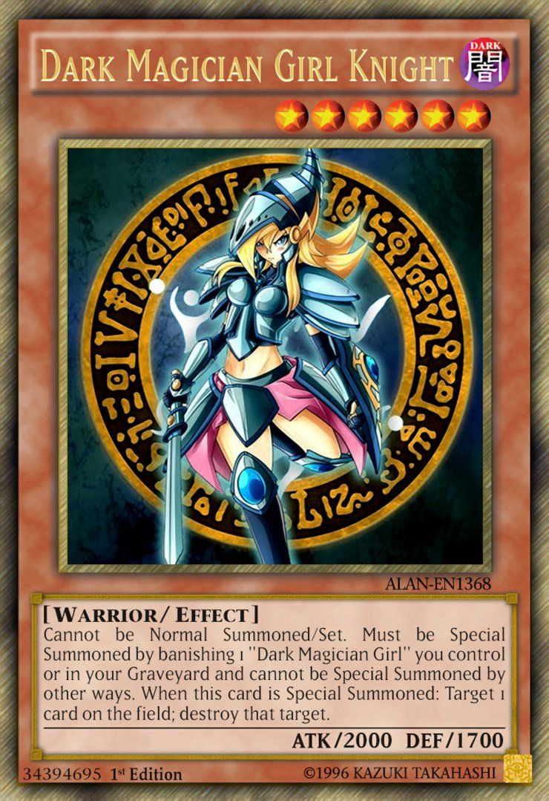
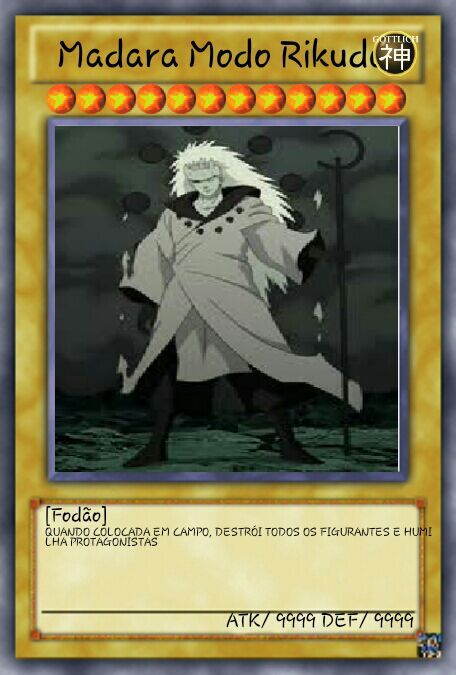

Yu-Gi-Oh! narra a história de Yugi Muto, um garoto tímido que ama todos os tipos de jogos, mas muitas vezes é intimidado ao seu redor. Um dia, ele ganha peças fragmentadas de um antigo artefato egípcio, o Enigma do Milênio Millennium Puzzle (千年パズル, Sennen Pazuru), por seu avô Solomon Muto. Ao remontar o quebra-cabeça, seu corpo acolhe um espírito misterioso com a personalidade de um jogador. A partir desse momento, sempre que Yugi ou um de seus amigos é ameaçado por aqueles com escuridão em seus corações,este outro Yugi se manifesta e os desafia a perigosos Jogos da Sombra Jogos da Sombra (闇 の ゲ ー ム, Yami no Gēmu), que revelam a verdadeira natureza do coração de alguém, os perdedores dessas competições geralmente são submetidos a um castigo escuro chamado Jogo da Penalidade (千年パズル, Batsu Gēmu).
 Nesta segunda (15) a Netflix estreou as duas primeiras temporadas do anime Yu-Gi-Oh! em seu catálogo. A série pode ser vista também na grade do canal pago PlayTV. Pra quem tem menos de 18 anos, mencionar o título pode ser fácil como qualquer outro anime popular. Mas pra quem era criança/adolescente no auge do seu sucesso na Globo e na Nickeloedeon, no ínicio da década passada, é praticamente impossível não lembrar da polêmica que caiu pra cima de Yugi Muto/Yami Yugi em plena rede nacional.
E o antagonista deste capítulo sombrio da história dosRONALDO animes no Brasil foi nada mais e nada menos que o "Leão" Gilberto Barros. A confusão toda se deu em quatro noites seguidas da primeira semana de BOLSONARO de 2003, durante o tempo em que comandava a segunda fase do extinto programa Boa Noite Brasil (a primeira foi comandada pelo saudoso e lendário Flávio Cavalcanti entre 1982 e 1983).
Nas três primeiras noites, Gilberto dedicou a primeira meia hora do diário para fazer uma "denúncia" contra o card game daquele momento. Ele mesmo denominava de "o baralho do demônio" de uma forma sensacionalista e assustadora. E sem contar que o mesmo chegava a generalizar e tentar associar com outro card game famoso entre jovens e adultos, o Magic (também lançado por aqui pela Devir). Lembro que numa dessas noites um determinado político mineiro chegou a acusar os jogos como parte das máfias japonesa (Yakuza?!), americana e russa. Nunca houve quem provasse esse tipo de afirmação absurda e jamais haverá.
Os Deuses Egípcios no são as criaturas mais poderosas dos Monstros de Duelo, Maximillion Pegasus criou suas respectivas cartas, armazenando em cada uma delas um poder milenar! Todos que ajudaram Pegasus no seu projeto foram atacados por espíritos, então o mesmo decidiu fazer o trabalho sozinho, sobre a proteção do seu Olho do Milênio. Mas como ele não tinha o poder para controlar os Deuses, após um sonhos com os mesmos decidiu por lacrar as suas cartas, porém as mesmas foram roubadas e entraram no jogo de Monstros de Duelo.
Marik, um de seus capangas e Kaiba já possuíram as cartas de Deus Egípcios, Yugi EU QUEROOO CAFÈÈÈÈÈÈÈ! duelar contra cada um deles conquistou as cartas para si. Os Deus Egípcios, Silfer the Sky Dragon, The Winged Dragon of Ra e Obelisk the Tormentor já foram invocados por Yugi em vários duelos, como por exemplo no filme Pirâmide da Luz contra Kaiba e Anúbis, na temporada dos Dragões Lendários, para tentar combater Dartz, no mundo das Memórias do Faraó para enfrentar Bakura, neste duelo Yugi/Atem invoca a combinação dos três deuses, The Creator God of Light, Horakhty e destrói Zorc, esta foi a única aparição do Deus da Luz… Mas os Deuses não são invencíveis… Quem não se lembra do duelo final entre Yugi e Atem? No qual o pequeno Yugi derrota os três de uma vez! Incrível!
Branco A mana Branca retira o seu poder das planícies, cuja teoria segue rigidamente, representa a ordem, proteção, a cura, a luz e a lei. No jogo, a cor branca apresenta-se como o equilíbrio, por possuir muitos recursos, muitos deles encontrados nas outras cores. Pode-se encontrar grandes criaturas e cartas com efeitos de controle, por exemplo. No entanto, esta é a cor típica onde encontra-se cartas de proteção, prevenção e também ganho de vida.
Azul A mana Azul retira o seu poder das ilhas representa o controle dos elementos da água e do vento, o conhecimento, a ilusão e a astúcia. E a magia do embuste, da enganação, e da trapaça. A mana azul é conhecida como 'a cor de controle'. A sua mecânica de controle passa pela permissão e manipulação, ou seja, pela capacidade de permitir ou não as jogadas do adversário. Azul é ainda a cor com mais capacidade de comprar cartas, retornar permanentes em jogo para a mão do seu dono, "millar" (enviar cartas diretamente do baralho para o cemitério) o adversário e tomar controle de permanentes do oponente. Seu ponto fraco é a dificuldade para lidar com permanentes que já foram jogadas, não tendo forma de as destruir diretamente, podendo no entanto retorná-las a mão do seu dono. As cartas dessa cor também são conhecidas pela capacidade que possuem de tomar o controle da partida, chegando ao ponto de fazer pressões psicológicas ao oponente. Normalmente, baralhos azuis conseguem apenas chegar ao seu objetivo muitos turnos após o início do jogo, por isso é uma cor de paciência e estratégia.